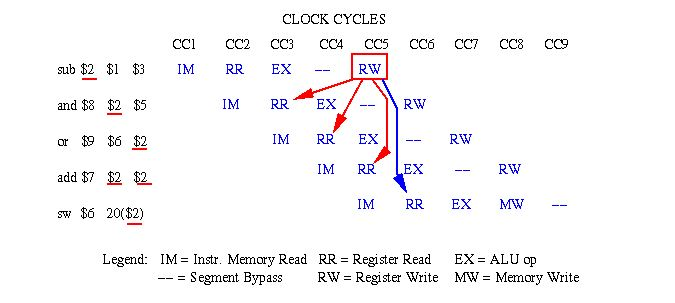
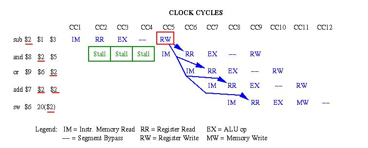
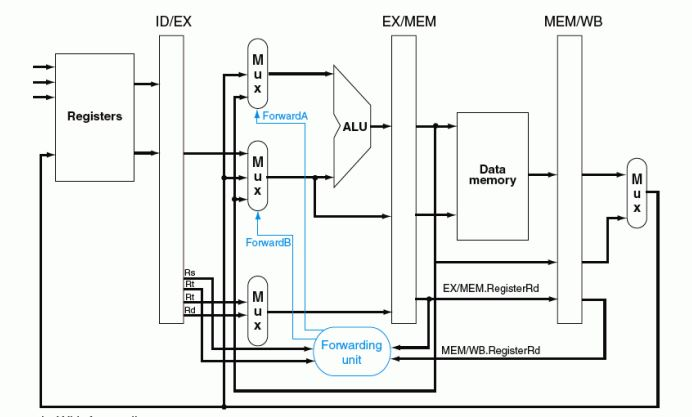
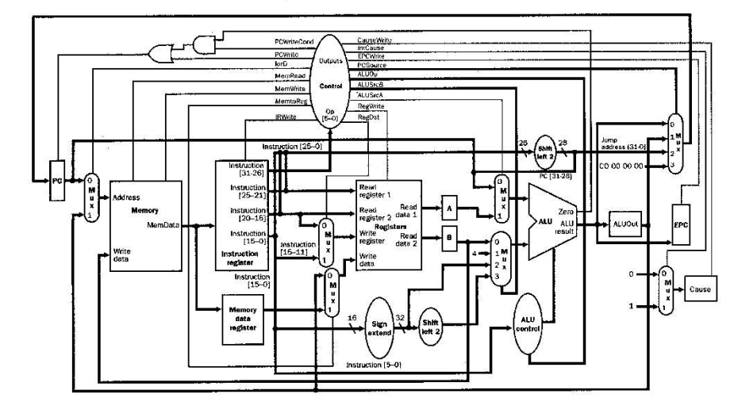

Introduction
Motivation
The purpose of this lab is to implement a THUMB processor with multiple pipeline stages that executes the given C-programs assembled for the ARM THUMB instruction set in Verilog.Appropriate attention is taken to reduce the clock cycles for lower instruction latency.The features of this processor are 5 stage pipeline,hazard detection and data forwarding.The processor is designed such a way that the CPU runs at a maximum frequency of 2.857 GHz.
Project Summary
Major milestones defined as per the project have been completed. Following table gives a short summary of our design and goals achieved.
| Feature | Value/Result |
|---|---|
| Number of Stages | 5 |
| Synthesizable | Yes |
| Max Frequency | 2.857 GHz |
| Power | 2.0583 mW |
| Can process count32 | Yes |
| Can process memcpy46 | Yes |
Implementation
Design
For the simulation of CPU program, the given data files which contains the instructions were read into the instruction register of the CPU.The processor designed is a 5 stage pipeline design. The stages are Instruction Fetch, Instruction decode,Execute,Memory Access and Write back.
The instruction fetch stage is where a program counter will pull the next instruction from the current location in to the program memory. In addition the program counter was updated with either the next instruction location sequentially or the instruction location as determined by a branch.
The instruction decode stage the control unit determines the values for the control lines that must be set to process the instruction. The decoded register addresses are sent to the register file and the data in the resister is passed to the ALU inputs.
The opcode that is been fetched is sent to the ALU for execution.If required,branch addresses are also calculated and the forwarding unit determines whether the output of the ALU or the memory unit should be forwarded to the ALU inputs.For this purpose a 2:1 Multiplexer is used.
In the Write back stage, calculated values are written back to the specific registers or memory.
The CPU also contains a hazard detection block to determine when a stall cycle must be added.This is enabled when the output of a previous load instruction is required for the current execution.The hazard detection block will also prohibit the program counter from updating it’s next calculated value.
Forwarding unit monitors the output of ALU and system memory and determines whether this value has to be given as a ALU input.If the recently calculated value is needed in the current execution before it is written to the register file it will be sent to the appropriate ALU input.
Source: [@CDACpipe]
Functional Description
Pipeline
The Pipelined model is an architecture which allows throughput of the processor to be increased dramatically by reusing the idle stages during processing of instructions.All the stages of a pipeline are executed in parallel with Registers inserted between the stages. This enables several operations to take place simultaneously, and the processing and memory systems to operate continuously[@TDMI_DS].The stages in the pipeline are instruction fetch, decode, execute and writeback.
Instruction Fetch Stage
The instruction fetch stage is responsible for reading the instruction memory and sending the next instruction to the next stage in pipeline,or a stall if a branch has been detected in order to avoid incorrect execution. It consist of three components : instruction memory, program counter.
Program Counter
The program counter is incremented by 2 after every instruction is executed. In cases where a jump is required the PC is modified directly by the output of ALU via a multiplexer.
Instruction Decode Stage
In decode stage the fetched instruction is decoded and it is responsible for assigning the different sections of instructions into their proper representation based on different instruction types.The decode stage consist of control unit, the hazard detection unit , the sign extender and the register file, and is responsible for connecting all these components together. It splits the instruction into various parts and feeds them into the corresponding components.Registers Rn and Rm are fed to the register file, the immediate data is fed to the sign extender, and the ALU opcodes and the function codes are sent to the control unit. The output of these corresponding components are clocked and then stored for next stage.The codes used in the decode section are listed in the table.
| Opcode | Instruction or instruction class |
|---|---|
| 00xxxx | Shift (immediate), add, subtract, move, and compare |
| 010000 | Data-processing |
| 010001 | Special data instructions and branch and exchange |
| 01001x | Load from Literal Pool, see LDR (literal) |
| 0101xx | Load/store single data item |
| 10100x | Generate PC-relative address |
| 10101x | Generate SP-relative address, see ADD (SP plus immediate) |
| 1011xx | Miscellaneous 16-bit instructions |
| 1101xx | Conditional branch, and Supervisor Call |
| 11100x | Unconditional Branch |
: Source: [@arm_manual]
Control Unit
Control is the hardware that tells the datapath what to do, in terms of switching, operation selection, data movement between ALU components [@Patterson].It takes the given opcode from the instruction and translate into individual instruction control lines needed for the remaining stages.All control signals can be set based on the opcode bits.
Hazard Detection and Forwarding Unit
Hazard occurs when we read a value that was just written from memory,as the value wont be available for execution until the end of the memory stage. It introduces stall cycle by replacing control lines with zero and disabling the program counter from updating. When a branch is detected the hazard detection unit will allow the program counter to write, but will feed it the branch address instead of the next counted value.
The forwarding unit is responsible for choosing what input is to be fed into the ALU.It takes the input from the decode stage ,the value that the ALU has fed to the write back stage as well as the register numbers corresponding to all of these and determines if there is any conflict exist.It will decide which of this values must be send to ALU.


Sign Extender and Shifter
The sign extender takes the immediate value and sign extends it if the current instruction is signed operation. It also has a shifted output for branch address calculation.
Register File
The data storage in the CPU is the register bank contained within the Instruction decode stage. This bank of registers is directly referenced from the ARM Thumb instructions and is designed to allow to access the data and avoid the use of much slower data memory.The registers are defined as being written in the negative edge of the clock and read in the positive edge.This is done to avoid hazards when one instruction is attempting to write to the register bank while the other is reading.
Execute Stage
The execute stage is responsible for performing the specified operations.The execute stage consist of ALU , branch determiner and the forwarding unit. It connects these components together so that the ALU processes the data properly given inputs chosen by the forwarding unit and will notify the decode stage if a branch is indeed to be taken.
ALU
The ALU is responsible for performing the actual calculation specified by the instruction. It takes two 16 bit inputs and opcode from the decode block and gives a single 16 bit output along with the Program status registers.
Branch Determiner
The Branch determiner is responsible for looking at the output of ALU , and the type of instruction it is decoding and determining whether the system is to branch or not.
For example in case of BLE (Branch if less than or equal) branch must be taken when if flags Z set, or N set and V clear, or N clear and V set.[@TDMI_DS]
Implementation of forwarding block is shown in Figure.

Writeback Stage
The write back stage is responsible for writing the calculated value back to the proper register.It has input control lines that tells whether the instruction writes back the output of ALU to memory or not.
Push and Pop Instruction
Pushing to stack and Popping data back from stack to registers is implemented as a FSM shown in the following Figure.
RTL verification
Test benches are used to simulate design without the need of any
physical hardware. The biggest benefit of this is that it inspects every
signal that is in the design. The overall CPU block is responsible for
tying all of the stages together as well as providing the access to the
outside world that the test bench uses to load instruction memory and
monitor the register bank for test verification.
The test bench for the CPU involved two different sections in order to
allow the testing of the CPU block as shown in Figure [fig:testbench].
The first section that was part of the test bench was the code that was
responsible for loading the instruction memory within the CPU.This
memory is what would run the instructions through the pipeline once the
CPU was allowed to start. The instructions that were loaded included
register based and immediate adds, subtracts (both signed and unsigned),
reading and writing data memory, and a loop that would force the CPU to
jump back to the start of instruction memory and execute those same
instructions again[@MIPS_paper]. The different adds were important
because each exercised different parts of the CPU including the data
forwarding unit, multiple registers and different functions within the
ALU itself.The jump instruction is important and also in that it
exercised the branch detection unit, hazard detection unit as well as
the ability of the instruction fetch stage to be able to jump to an
address and continue execution with only the input of a single stall
cycle.
Synthesis
A synthesis tool takes an RTL hardware description and standard cell library as input and produces a gate level netlist as output[@iitkgp]. The resulting gate level list is completely a structural description with standard cells of the design.It is not necessary that the Verilog is functionally correct ,it must be written in such a way that it directs the synthesis tool to generate good hardware. Verilog are tied to particular clock cycles. The synthesized netlist exhibits the same clock-by-clock cycle behavior, allowing the RTL testbench to be easily re-used for gate-level simulation. Design Vision was used for synthesizing our designed processor.
Unpipelined Processor
The motive for multi cycle implementation for THUMB processor is to improve the performance of Single cycle Thumb processor which executes all instructions in 1 cycle. The main problem in Single cycle processor is, as all instructions are executed concurrently in one cycle, the components cannot be used more than once in a cycle. To make this design more efficient, sharing of the component can be made possible by making it have multiple input and outputs selected by a multiplexer.The control signals for such multiplexers are decided using the finite state machine. The individual components are connected as per the figure.

Evaluation
The comparison of the obtained specifications are listed in Table below. Features like power, Maximum operating frequency and processing time is better in un pipelined architecture compared to pipelined architecture. However the processing time is the basis for performance and throughput .An interesting aspect about the processing time achieved in pipelined and un pipelined stages is the that, though 5 stage pipeline is used the execution time or the performance has not increased 5 folds as expected. This is the result of adding stalls in Hazard block. Hence the measure of performance is not just dependent on the number of pipelined stages but also the type of instructions executed and the frequency at which stalls are inserted in the data path.
| Feature | Pipelined | Un-Pipelined |
|---|---|---|
| Area | 3783.4 units | 8649 units |
| Power | 2.0583 mW | 2.1109 mW |
| Critical time | .35 nS | .25 nS |
| Maximum Frequency | 2.857 GHZ | 4 GHz |
| Execution time | 2184956 pS | 337300 pS |
Comparison of Pipelined and Unpipelined
Following Timing report is obtained for a Clock period of 0.35 nS. $$\therefore Max_{frequency} = \frac{1}{0.35 nS} = 2.86 GHz$$ .
Conclusion
As a result of this work,Thumb processor with pipelined stages is implemented using Verilog Hardware description language and a throughput better than Unpipelined architecture is achieved.The design is synthesize-able and achieves the required goals of the project.
Future work
The processor performance can optimized by inserting stalls intelligently .
Dynamic Branch prediction algorithm can be implemented inside the processor
Gate level simulation needs further debugging
Referrences
This appendix documents the software tools used for this project.
| Tool | Version |
|---|---|
| ModelSim | SE-64 10.3d |
| Synopsis Design Vision | 2013.12-SP5-3 |
The Thumb instruction set,
http://apt.cs.manchester.ac.uk/ftp/pub/apt/peve/PEVE05/Slides/05_Thumb.pdfPipelined Processor Design,04/25/07, Luke Harvey and Stephanie Spielbauer
Addison Wesley - ARM System-on-Chip Architecture, 2Ed.pdf. .
Organization of Computer Systems: Pipelining. [Online]. Available: https://www.cise.ufl.edu/ mssz/CompOrg/CDA-pipe.html. [Accessed: 02-Aug-2017].
Organization of Computer Systems: Processor & Datapath. [Online]. Available: https://www.cise.ufl.edu/ mssz/CompOrg/CDA-proc.html. [Accessed: 01-Aug-2017].
ARM Architecture Reference Manual ARMv7-A and ARMv7-R edition Errata markup Copyright 1996-1998, 2000, 2004-2011 ARM Limited.
ARM7TDMI Data Sheet Copyright ARM Limited.
Patterson, D.A. and J.L. Hennesey. Computer Organization and Design: The Hardware/Software Interface, Second Edition, San Francisco, CA: Morgan Kaufman (1998).
Vhdl Implementation of A Mips-32 Pipeline Processor, Kirat Pal Singh, Shivani Parmar
IIT Lab tutorial http://www.facweb.iitkgp.ernet.in/ isg/TESTING/SLIDES/Tutorial2b.pdf